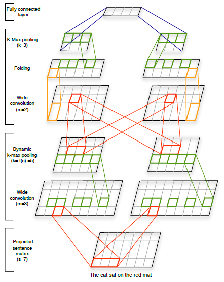

Uses CNN to represent sentences, which they call "Dynamic Convolutional Neural Network (DCNN)"
Each filters of CNN captures n-gram information of the words
It can capture long ranged n-gram information and hierarchically combine them
No additional parse trees are required
Pooling operation for each of the filters induces word invariance to absolute position within the n-gram

Architecture
Input : word embedding vectors (trained along with CNN)
Wide Convolution : essentially one dimensional filter that captures n-gram information of each latent feature of a word vector
Dynamic k-max pooling : Selects k-most highest activation values in each convolution
It is dynamic as the value of k varies depending on the current number of convolution layer (l), total number of convolutional layers in the networkd (L) and the length of the input sentence (s)
k_top = the fixed pooling parameter for the top most convolution layer (fixed parameter)
Folding : Sums up every two features (rows) of the final CNN induced sentence embedding vectors
This model tries to minimize accounting for the dependencies between the latent features in the embedding vectors (perhaps the authors assume that each of the latent features could contain its own independent mechanism or interpretation)
Instead of folding, dynamically training the dependencies between the latent features by using multi-dimensional filters might capture some interesting dependencies between words and their n-grams in non-linear space.